Yi-Ting Tsai
My Project Portfolio
UW Other Projects
64-bit ARM Pipelined CPU:
Associated Course: Computer Architecture
Keys Words: CPU, Pipelining, ARM Assembly Language, Machine Code, Register File, ALU, Memory, Digital Logic Design, SystemVerilog, Data Hazard, Control Hazard, Data Forwarding
Description: In this project, I designed and implemented a 64-bit ARM 5-stage Pipelined CPU using SystemVerilog. It can run the following ARM instructions:
- ADDI Rd, Rn, #Imm12
- ADDS Rd, Rn, Rm
- B #Imm26
- B.LT #Imm19
- CBZ Rd, #Imm19
- LDUR Rd, [Rn, #Imm9]
- LDURB Rd, [Rn, #Imm9]
- MOVK Rd, #Imm16, LSL #Shift
- MOVZ Rd, #Imm16, LSL #Shift
- STUR Rd, [Rn, #Imm9]
- STURB Rd, [Rn, #Imm9]
- SUBS Rd, Rn, Rm
The pipelined CPU has 5 stages: Instruction Fetch, Register Fetch and Instruction Decode, Execute, Memory Access, and Register Writeback. During each clock cycle, the first four stages update and output their corresponding data and control signals to the stage registers, while the Writeback stage only works as the Write ports of the Register File in the Register Fetch stage.
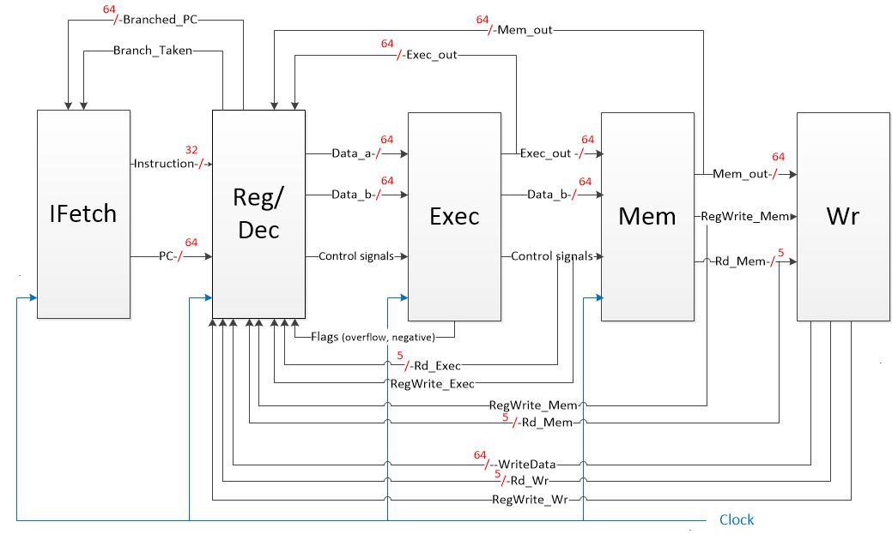(1) The Overall Block Diagram of the CPU
The Ifetch stage updates the program counter and fetches its corresponding instruction each cycle. To avoid control hazard, a delay slot is needed after each branch instruction. It can be a no-op or an insturction that needs to be excecuted no matter the branch condition. Since I chose to update the branched PC at the end of the Reg/Dec stage instead of at the Exec stage, calculations are accelerated. Therefore, only one delay slot instead of two are required to stall these branch instructions.
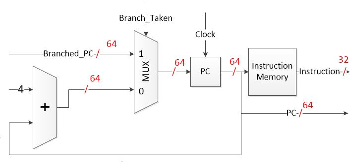 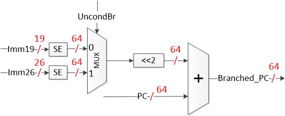(2) Datapath for the Ifetch stage (3) Datapath for the branch-related part in the Reg/Dec stage. Left shift (multiplication) is used after sign extension because our PC is incremented by 4.
In the Reg/Dec stage, control signals (except Branch_Taken, which is determined based on flags) and registers needed are decoded based on the 32-bit instruction's opcode, etc. Another major part in the Reg/Dec stage is to read data from the Register File. To avoid data hazard, a forwarding unit is used to determine whether we need to fetch data outputs of previous instructions from the Exec and Mem stages. However, even with the forwarding unit, we still need one delay slot for each load instruction (similar to branch instructions).
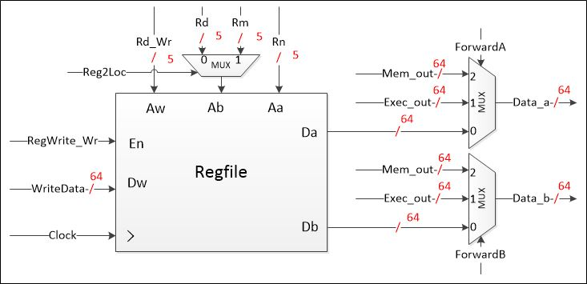 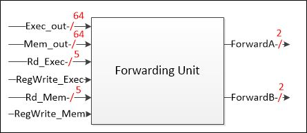(4) The Regfile in the Reg/Dec stage (5) The forwarding unit in the Reg/Dec stage
In the Exec stage, arithmetic operations are done. Data to be stored/loaded or memory addresses to be used are calculated. The main component in this stage is the Arithmetic Logic Unit. The ALU I designed can do the following operations: pass B, A+B, A-B, bitwise A & B, bitwise A | B, bitwise A XOR B.
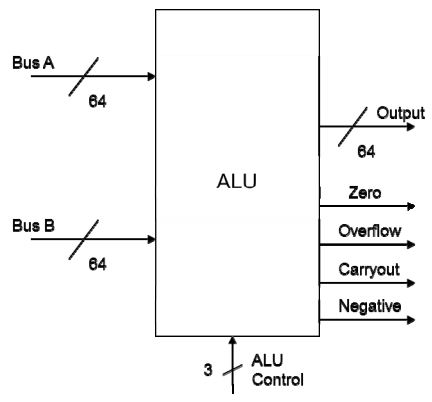(6) The ALU in the Exec stage
In the Mem stage, data are loaded/stored from/to the data memory. Eventually, the data to be written to the Regfile will be passed on to the Wr stage.
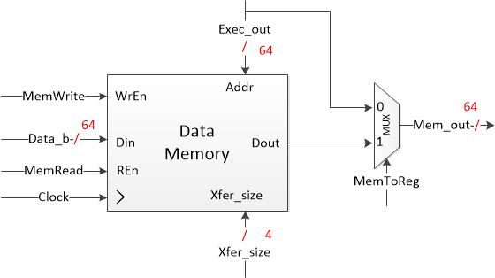(7) Basic Datapath of the Mem stage
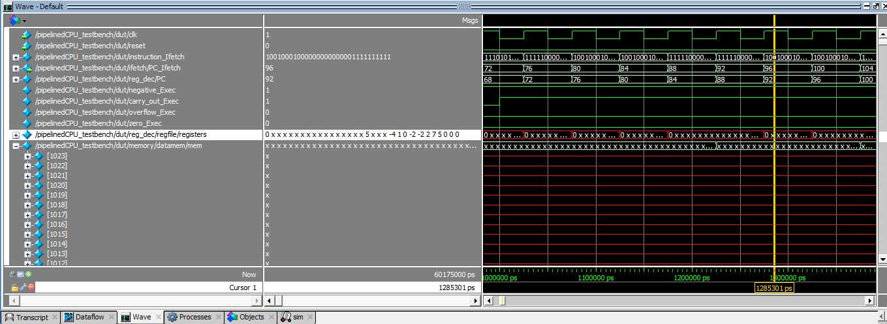(8) Testing the CPU in ModelSim
Game - Snake & Apples:
Associated Course: Digital Circuits and Systems
Keys Words: Digital Logic Design, SystemVerilog, FPGA, DE1-SoC board, Finite State Machine, Linear Feedback Shift Register (LFSR), Counter
Description: In this project, I developed an implementation of the snake game on a DE1-SoC board using SystemVerilog. The playground is an 8x8 LED array, and each LED is a finite state machine that reacts based on the states its neighboring LEDs are in. On the array board, the snake (green dots) moves around looking for apples (red dots, random locations made by LFSR). When the head hits the apple, the snake scores a point, and grows longer. If the snake ever runs over its own tail, it dies. The speed of the snake can be set by the switches on the board, and the direction of the snake can be controlled by the push buttons beside the switches.
Game - Tug of War:
Associated Course: Digital Circuits and Systems
Keys Words: Digital Logic Design, System Verilog, FPGA, DE1-SoC board, Finite State Machine, Linear Feedback Shift Register, Counter
Description: In this project, I developed an implementation of a tug of war game on a DE1-SoC board using System Verilog. Each LED is a finite state
machine.
1) Two-player mode: when the game starts, only the centermost LED is lit. Each time the first player presses the KEY[0] button, the light moves one LED right.
Each time the second player presses the KEY[3] button, the light moves one LED to the left. If the light ever goes off the end of the playfield,
the player that moved it off the end wins, and the HEX 7-segment displays on each side will record the score.
2) Single-player mode: same rules, but
against a cyberplayer. Player can speed up or slow down the "opponent" by playing with the user switches.
Single-player mode & Two-player mode
Analog Audio Mixer:
Associated Course: Circuit Theory
Keys Words: Audio Mixer, Music Equalizer, Band-pass Filter, NI Multisim, Oscilloscope, Circuit Building, Circuit Testing
Description: In this project, we designed three equalizer filters (band-pass) with different center frequencies by utilizing op-amps, capacitors, and potentiometers. We then built a complete audio mixer on a breadboard by combining the three-channel equalizer with elements like buffer, summing amplifier, speaker, and microphone. To explore the equalizer’s characteristics, we analyzed the output waveforms in an oscilloscope with a sine input from a function generator, and plotted different bode plots in Multisim afterwards.
In this system, there are specific roles for each part of the circuit. First, the pre-amplifier controls the microphone in the circuit. It is used to manage the amplitude of signals from the microphone, and also to remove the unnecessary noise at high frequencies. Next, the first summing amplifier is used to mix the signals of three input channels from a microphone, a laptop, and a smartphone. Each potentiometer in the summing amplifier changes the volume of each individual signal, and the potentiometer above the op-amp controls the total volume of all three channels. Finally, the buffer, the three filters and another summing amplifier form an equalizer. The buffer is used to isolate the input from the output in order to reduce impedance and to raise the current. Each filter is a band pass filter which controls the output magnitude of a specific range of frequency. We have a low range (250Hz), midrange (1kHz) and a high range (4kHz) filter. After that, a summing amplifier combines all three channels and goes to the speaker.
Equipment used: function generator, oscilloscope, power supply, wires, cables, breadboard, capacitors, resistors, potentiometers, op-amps, multimeter, microphone, speaker, laptop for music playing.
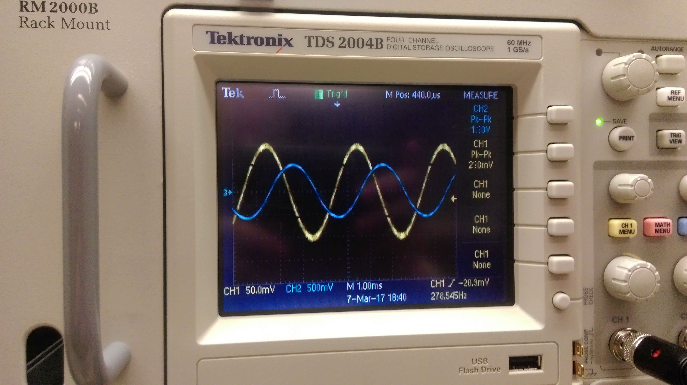 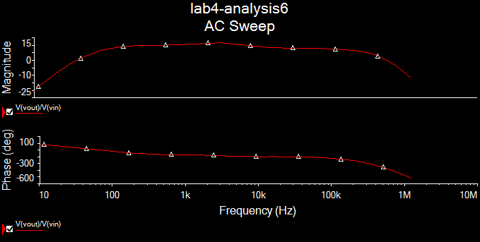(1) Testing our circuit with oscilloscope (2) Testing our circuit in NI Multisim
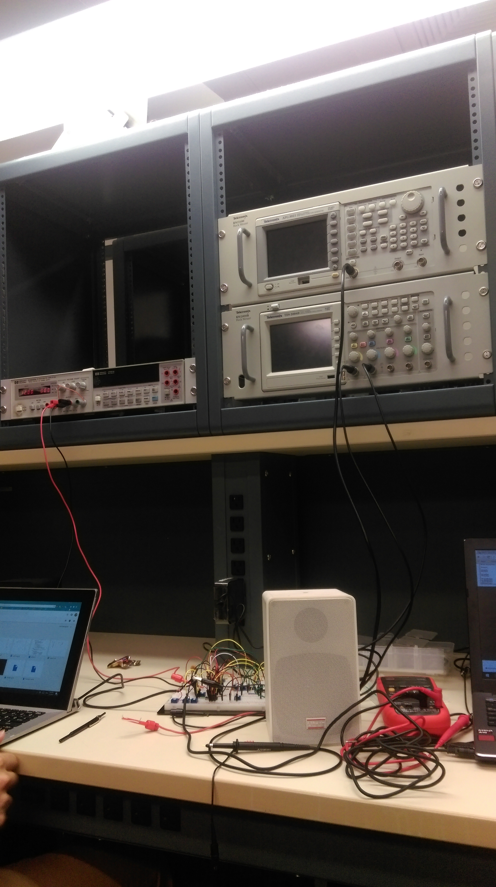 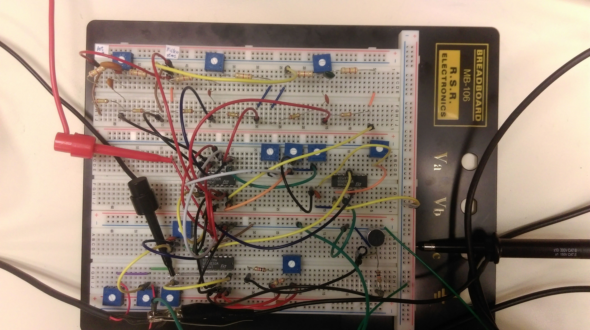 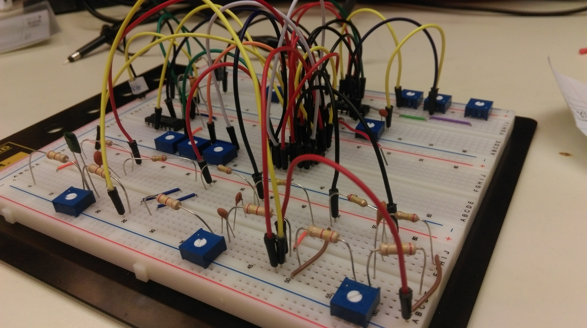(3) The finished circuit
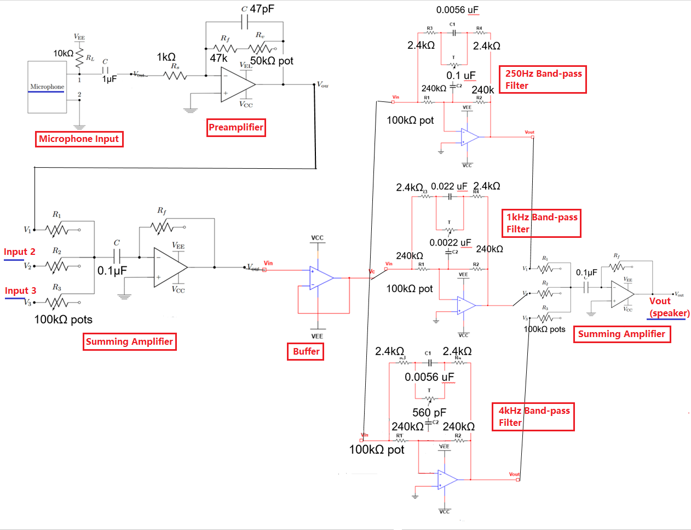(4) The whole circuit diagram
T9 Predictive Text:
Associated Course: Programming Concepts and Tools
Keys Words: C, Linux, Data Structures, Search Tree, Trie, Struct, Makefile
Description: In this assignment, I built a C program (compiled in Linux with makefile and gcc) to implement T9 predictive text. In the program, a trie/tree that stores the key sequences was used. Each node in the trie will have 8 possible branches, indicating number 2-9. As we travel down a path in the trie, we reach word sequences spelled out by the numbers along that path.

(1) The T9 keypad - each number from 2-9 on the keypad represents three or four letters
The program will first read in a dictionary file that contains a list of words. After that, it will translate each word in the dictionary into its numeric key sequence, before adding the key sequence to my trie. The words will be attached at the end of the path corresponding to the digits. If a word with the same numeric sequence already exists in the trie, the word will be added as a link to a new node with an edge labeled '#' instead of one of the digits 2-9. Below is a demonstration of the program's interactive session:
./t9 dictionary.txt Enter "exit" to quit. Enter Key Sequence (or "#" for next word): > 76257 'pocks' Enter Key Sequence (or "#" for next word): > # 'rocks' Enter Key Sequence (or "#" for next word): > 53556 'jello' Enter Key Sequence (or "#" for next word): > # There are no more T9onyms >4423 Not found in current dictionary. >exit
Searching Implicit Graph - Tower of Hanoi:
Associated Course: Data Structures and Algorithms
Keys Words: Java, Problem-space Graph, State Space, Data Structures, Breadth-first Search
Description: In this assignment, I implemented a problem-space graph in Java and used it to solve the Tower of Hanoi (4 disks) with the least number of movements. In the implicit problem-space graph, each vertex represents the states reached in the course of solving the Tower, and each edge represents the transitions between these states.
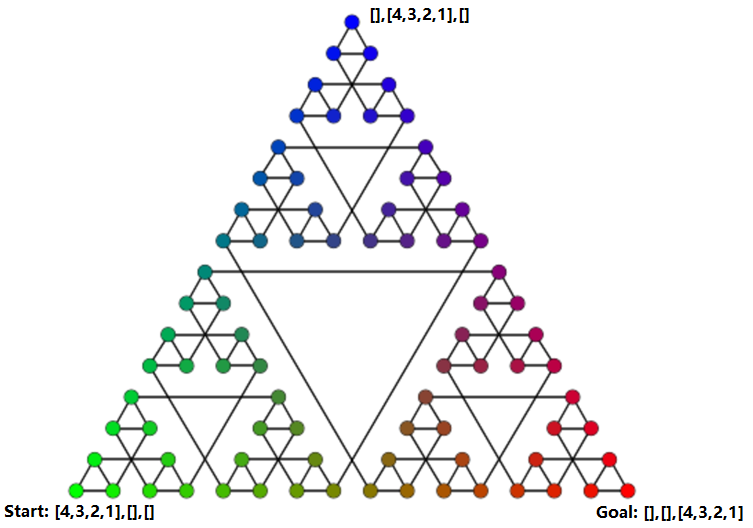(1) The Problem-space Graph of the Tower of Hanoi
The start vertex corresponds to the problem's initial state, in which all 4 disks are on the left peg. The end vertex corresponds to the problem's final goal state, in which all 4 disks are on the right peg. By using breadth-first search (BFS), I was able to find the shortest path between the start vertex and the end vertex.
Shortest path: [4,3,2,1],[],[],[] -> [4,3,2],[1],[],[] -> [4,3],[1],[2],[] -> [4,3],[],[2,1],[] -> [4],[3],[2,1],[] -> [],[3],[2,1],[4] -> [],[],[2,1],[4,3] -> [1],[],[2],[4,3] -> [1],[],[],[4,3,2] -> [],[],[],[4,3,2,1]
Database on Employee Engagement Trends:
Associated Course: Relational Database Management Systems
Keys Words: Relational Database, Entity Relationship Diagram (ERD), SQL, MS SQL Server, Visio, Stored Procedure, User-defined Function, Backup, Computed Column, Check Constraint, Data Purge, Data Archival, View
Description: In this project, I diagramed (in Visio) and populated a database (using scripts and Import Wizard in MS SQL Server) with random data to simulate the explorations in employee engagement trends in a business. I developed the database by creating business rules and transactions with stored procedures and functions, and maintained the database with backups and data purge/archival.
An example stored procedure that deals with data purge/archival: If an employee still exists within the system two years after their end date, archive their data and delete it from the database
An example stored procedure that deals with transaction: Record an employee's donation.
An example user-defined function with check constraint: Employees who work less than 1 year at XXX cannot work in more than 3 teams at the same time.
An example user-defined function that sets a computed column: The average number of events each employee registers for per year since he/she has been working at XXX.
An example view that presents a "table report": A table with employees' information including each employee's total number of registered events, total donation amount, number of different teams participated, and number of team awards received.
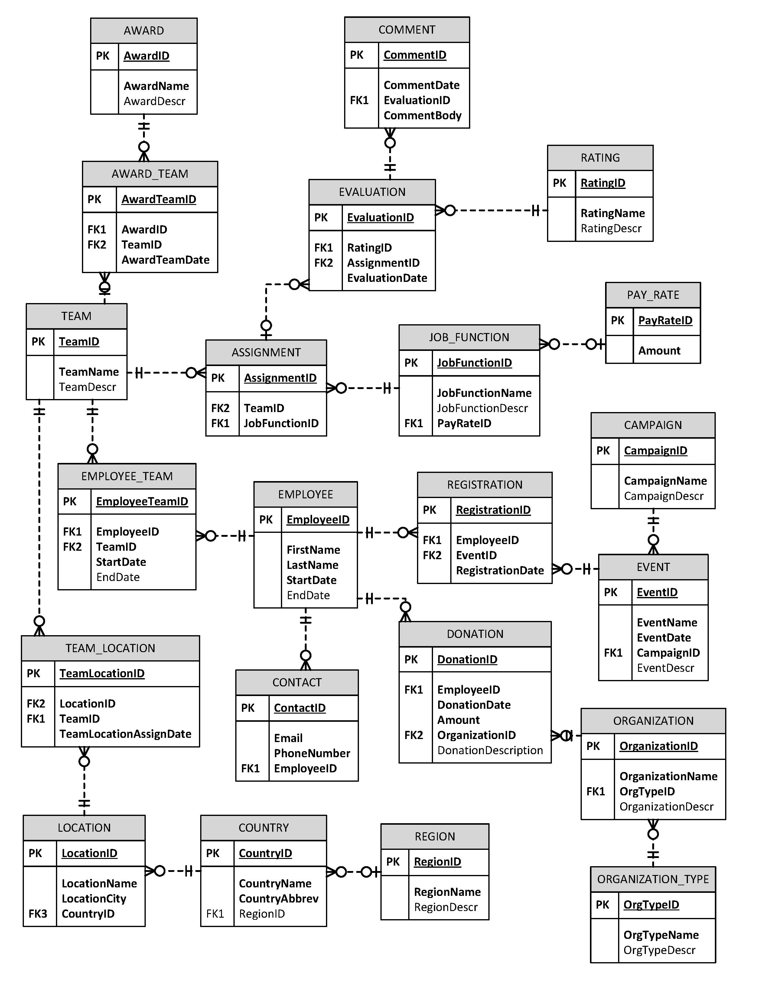(1) The ERD of the Database